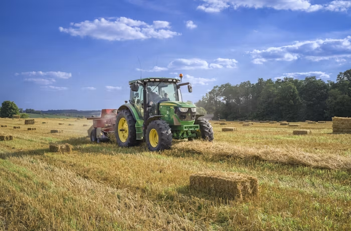

Salve o Corinthians O campeão dos campeões Eternamente Dentro dos nossos corações Salve o Corinthians De tradições e glórias mil Tu és orgulho Dos desportistas do Brasil Teu passado é uma bandeira Teu presente é uma lição Figuras entre os primeiros Do nosso esporte bretão Corinthians grande Sempre altaneiro És do Brasil O clube mais brasileiro Salve o Corinthians O campeão dos campeões Eternamente Dentro dos nossos corações Salve o Corinthians De tradições e glórias mil Tu és orgulho Dos desportistas do Brasil
Cadeias curtas de abastecimento reduzem o impacto ambiental e garantem alimentos mais frescos nas cidades.
Resíduos urbanos transformados em recursos para o campo, criando ciclos sustentáveis de produção.
Comunidades rurais e urbanas que se conhecem e colaboram formam sociedades mais resilientes.
Relações comerciais mais diretas garantem remuneração adequada aos produtores rurais
Acesso a alimentos frescos e contato com a natureza promovem melhor qualidade de vida.
Intercâmbio de conhecimentos técnicos, tradicionais e culturais entre os dois mundos.